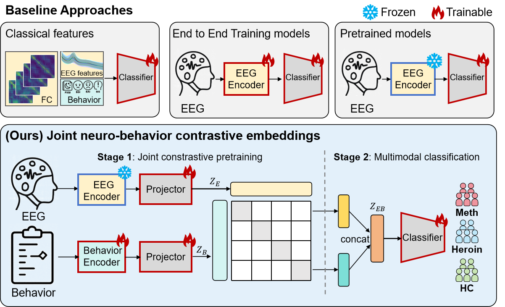
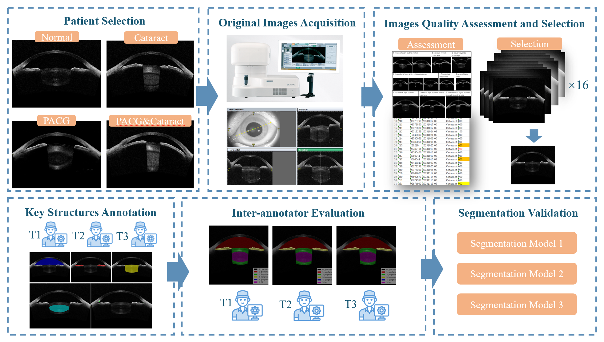
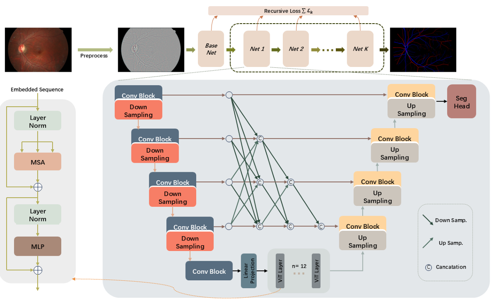
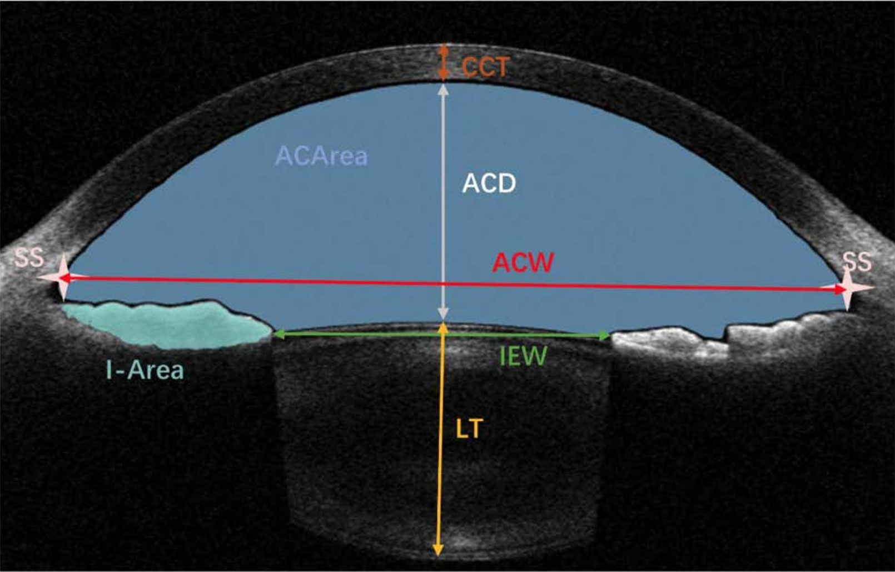
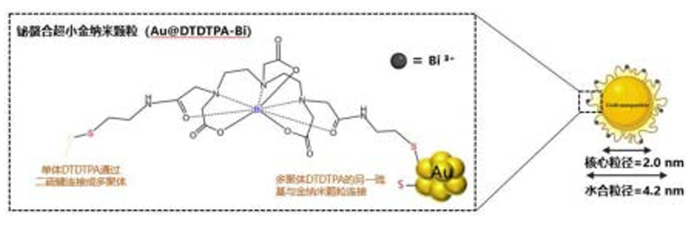

About

News
- 🎉🎉Awarded first prize in 2nd Brain-Inspired Intelligence Innovation Competition (South China Region)!
- Give a talk on "Academic Development for New Students" at SCUT, Guangzhou. See [here]
- 🎉🎉Honored to be awarded the First Class (1%) Scholarship, the highest scholarship awarded by SCUT.
- 🎉🎉Awarded third prize in Contemporary Undergraduate Mathematical Contest in Modeling, Guangdong Province.
- Participated in MICCAI 2025 and give a talk about my OMIA paper, Dajeon, South Korea. Check it out [here]
- Joined Neural Computing & Control Lab as a visiting student.
- Awarded the first prize of Shenzhen Cup Mathematical Modeling Competition, making it to the final, Guangdong Province. See you in Shenzhen BIT-MSU University!🎉🎉
- Awarded third prize in 10TH International Biomedical Engineering Innovation Design Competition. Check it out [here]
- One paper accepted to 12th MICCAl Workshop on Ophthalmic Medical lmage Analysis. See you in Dajeon!🎉🎉
- 🎉🎉One patent is granted. See the details here.
- 🎉🎉Awarded first prize in Contemporary Undergraduate Mathematical Contest in Modeling, Guangdong Province.
Experiences
 Sep, 2025 - Now
Sep, 2025 - Now
Mar, 2024 - July, 2025
Research Student @ HDMI Lab, SCUT
Supervisor: Dr. Yanwu Xu and Dr. Huihui Fang
Publications ( / )

EEG Contrastive Learning Method for Neuro–Behavior Alignment(Under Review)
IEEE International Conference on Multimedia & Expo (ICME)

ASOCT-MSDC : AS-OCT Multi-Structure & Disease Classification Dataset (Under Review)
Scientific Data

Dataset, Baseline and Evaluation Design for Gave Challenge
12th MICCAl Workshop on Ophthalmic Medical lmage Analysis

Anterior segment parameter measurement method and device, electronic device, and storage medium
Chinese Invention Patent, CN119107380A, 2025 (Granted)

Preparation method and application of bismuth ion chelated ultrasmall gold nanoparticles cleared by kidneys
Chinese Invention Patent, CN120022387A, 2025 (Public)